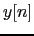
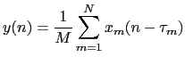
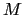
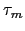

Next: Time Delay of Arrival Up: Multichannel Acoustic Enhancement Previous: Linear Apertures Theory Contents
The application of the general signal beamforming theory to the case of acoustic beamforming has some peculiarities and has been broadly studied in the past. In general it is considered that the acoustic signal is generated by a far-field source (therefore it arrives at the microphones as a flat wave) and that it has usually been considered as having a narrow-band frequency response (not taking into consideration the different behavior of the arrays to multiple frequencies).
There are two main groups of beamforming techniques that can be found in the bibliography. These are data-independent (or fixed) and data-dependent (or adaptive). The techniques that are data-independent fix their parameters and maintain them throughout the processing of the input signal. Data dependent techniques update their parameters to better suit the input signal, adapting to changing noise conditions. Moreover, there are several postprocessing techniques that are applied after the beamforming, some of them very linked to the beamforming process.
Fixed beamforming techniques are simpler to implement than the adaptive ones, but are more limited in their ability to eliminate highly directive (and sometimes changing) noise sources. The simplest beamforming technique in this group is the delay&Sum (D&S) technique (Flanagan et al. (1994), Johnson and Dudgeon (1993)). The output signal  is defined as:
|  | (2.32) |
given a set of  microphones, where each microphone has a delay of  relative to the others. In this technique all channels are equally weighted at the output. The D&S beamforming is a particular case of a more general definition of a filter&sum beamforming where an independent filter is applied to each channel:
One application of such techniques is the Superdirective Beamforming (SDB) (Cox et al. (1986), Cox et al. (1987)), where the channel filters (or also called superdirective beamformers) are defined to maximize the array gain (or directivity factor), which is defined as the improvement in signal to noise ratio between the reference channel and the ``enhanced'' system output.
For the case of near-field signals (like when a microphone array is located right in front of the speaker in a workstation) the SDB has been reformulated (Tager (1998a), Tager (1998b), McCowan, Moore and Sridharan (2000)) by using the near-field propagation functions for the acoustic waves, where waves are not considered planar anymore.
Considering the speech signal to be narrow-band simplifies the design of beamforming systems but does not represent well the reality. To deal with broadband signals in an effective manner, several sub-array beamforming techniques have been proposed (Fischer and Kammeyer (1997), Sanchez-Bote et al. (2003)) where the set of microphones is split into several sub-arrays which focus their processing in a particular band, collapsing all the information into the ``enhanced'' signal at the end.
The adaptive beamforming techniques present a higher capacity at reducing noise interference but are much more sensitive to steering errors due to the approximation of the channel delays.
The Generalized Sidelobe Canceller (GSC) technique (Griffiths and Jim, 1982) aims at enhancing the signal that comes from the desired direction while cancelling out signals coming from other sources. This is achieved by creating a double path for the signal in the algorithm. A standard beamforming path is modified by an adaptive path consisting of a blocking matrix and a set of adaptive filters that aim at minimizing the output noise power. The blocking matrix blocks the desired signal from the second path. At the end both paths are subtracted to obtain the output signal. In order to find the optimum coefficients for the lower part, an algorithms like the Least Mean Squares (LMS) can be used.
Although widely used, in practice the GSC can suffer from distortion of the output signal normally called signal leakage. This is due to the inability of the blocking matrix to completely eliminate the desired signal from the adaptive path (which is very common in speech due to its broadband properties). This problem is treated in Hoshuyama et al. (1999) where the blocking matrix is designed with control of the allowed target error region.
A different kind of adaptive beamforming techniques are those that allow a small amount of distortion of the desired signal as it is considered not to affect the quality of the signal as perceived by human ears. One of such techniques is named the AMNOR (Adaptive Microphone-array system for Noise Reduction), introduced by Kaneda and Ohga (1986), Kaneda (1991) and Kataoka and Ichirose (1990). It introduces a known fictitious desired signal during noise-only periods in order to adapt the filters to cancel such signal and therefore improve the quality of the speech parts. One drawback of this technique is the need for accurate speech/non-speech detection.
Some efforts have been reported applying the adaptive beamforming techniques to the near-field case. In McCowan, Marro and Mauuary (2000) and McCowan et al. (2001) adaptive beamforming and super-directive beamforming are combined for this effect.
In real applications none of the previously described beamforming techniques achieves the levels of improvement on the signal set theoretically. In practice a post-processing of the acoustic signal is necessary in order to obtain the optimum output quality. In Zelinski (1988) a Wiener post-filtering is applied where time delays information is used to further enhance the signal in the filter. In Marro et al. (1998) it does a very thorough analysis of the interaction of Wiener filtering with a filter&sum beamforming, showing that the post-filter can cancel incoherent noise and allows for slight errors in the estimated array steering. Other post-filtering approaches applied to microphone arrays beamforming are proposed in Cohen and Berdugo (2002) and Valin et al. (2004).
There are many post-processing techniques aimed to the ``enhanced'' single channel signal resulting from the beamforming. Some of them take into account acoustic considerations (Rosca et al. (2003), Zhang et al. (2004)) or acoustic models (Brandstein and Griebel, 2001) to better enhance the signal.